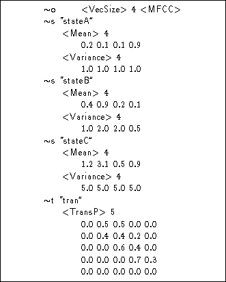
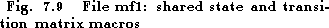
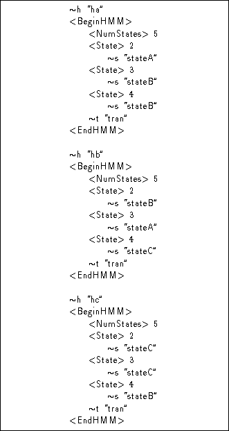
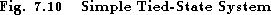
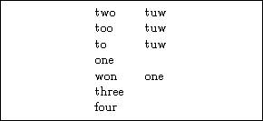
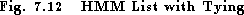

The previous sections have described how a single HMM definition can be specified. However, many HTK tools require complete model sets to be specified rather than just a single model. When this is the case, the individual HMMs which belong to the set are listed in a file rather than being enumerated explicitly on the command line. Thus, for example, a typical invocation of the tool HEREST might be as follows
HERest ... -H mf1 -H mf2 ... hlistwhere each -H option names a macro file and hlist contains a list of HMM names, one per line. For example, it might contain
ha
hb
hc
In a case such as this, the macro files would normally
contain definitions for the models ha,
hb and hc, along with any lower level macro
definitions that they might require.


As an illustration, Fig 7.9 and Fig 7.10 give examples of what the macro files mf1 and mf2 might contain. The first file contains definitions for three states and a transition matrix. The second file contains definitions for the three HMMs. In this example, each HMM shares the three states and the common transition matrix. A HMM set such as this is called a tied-state system.
The order in which macro files are listed on the command line and the order of definition within each file must ensure that all macro definitions are defined before they are referenced. Thus, macro files are typically organised such that all low level structures come first followed by states and transition matrices, with the actual HMM definitions coming last.
When the HMM list contains the name of a HMM for which no corresponding macro has been defined, then an attempt is made to open a file with the same name. This file is expected to contain a single definition corresponding to the required HMM. Thus, the general mechanism for loading a set of HMMs is as shown in Fig 7.11. In this example, the HMM list hlist contains the names of five HMMs of which only three have been predefined via the macro files. Hence, the remaining definitions are found in individual HMM definition files hd and he.
When a large number of HMMs must be loaded from individual files, it is common to store them in a specific directory. Most HTK tools allow this directory to be specified explicitly using a command line option. For example, in the command
HERest -d hdir ... hlist ....the definitions for the HMM listed in hlist will be searched for in the subdirectory hdir.


After loading each HMM set, HMODEL marks it as belonging to one of the following categories (called the HSKind )
As shown in Figure 7.8, complete HMM definitions can be tied as well as their individual parameters. However, tying at the HMM level is defined in a different way. HMM lists have so far been described as simply a list of model names. In fact, every HMM has two names: a logical name and a physical name. The logical name reflects the rôle of the model and the physical name is used to identify the definition on disk. By default, the logical and physical names are identical. HMM tying is implemented by letting several logically distinct HMMs share the same physical definition. This is done by giving an explicit physical name immediately after the logical name in a HMM list .
For example, in the HMM list shown in Fig 7.12, the logical HMMs two, too and to are tied and share the same physical HMM definition tuw. The HMMs one and won are also tied but in this case won shares one's definition. There is, however, no subtle distinction here. The two different cases are given just to emphasise that the names used for the logical and physical HMMs can be the same or different, as is convenient. Finally, in this example, the models three and four are untied.


This mechanism is implemented internally by creating a  l macro
definition for every HMM in the HMM list. If an explicit physical HMM
is also given in the list, then the logical HMM is linked to
that macro, otherwise a
l macro
definition for every HMM in the HMM list. If an explicit physical HMM
is also given in the list, then the logical HMM is linked to
that macro, otherwise a  h macro
is created with the same name as the
h macro
is created with the same name as the  l macro. Notice that this is
one case where the ``define before use'' rule is relaxed. If an undefined
l macro. Notice that this is
one case where the ``define before use'' rule is relaxed. If an undefined
 h is encountered then a dummy place-holder is created for it and,
as explained above,
HMODEL subsequently tries to find a HMM definition
file of the same name.
h is encountered then a dummy place-holder is created for it and,
as explained above,
HMODEL subsequently tries to find a HMM definition
file of the same name.
Finally it should be noted that
in earlier versions of HTK, there were no HMM macros. However,
HMM definitions could be listed in a single
master macro file or MMF . Each HMM definition began
with its name written as a quoted string and ended with a period
written on its own (just like master label files), and the first
line of an MMF contained the string #!MMF!#. In HTK V2.0 ,\
the use of MMFs has been subsumed within the general macro
definition facility using the  h type.
However, for compatibility, the older MMF style of file can still be
read by all HTK tools.
h type.
However, for compatibility, the older MMF style of file can still be
read by all HTK tools.